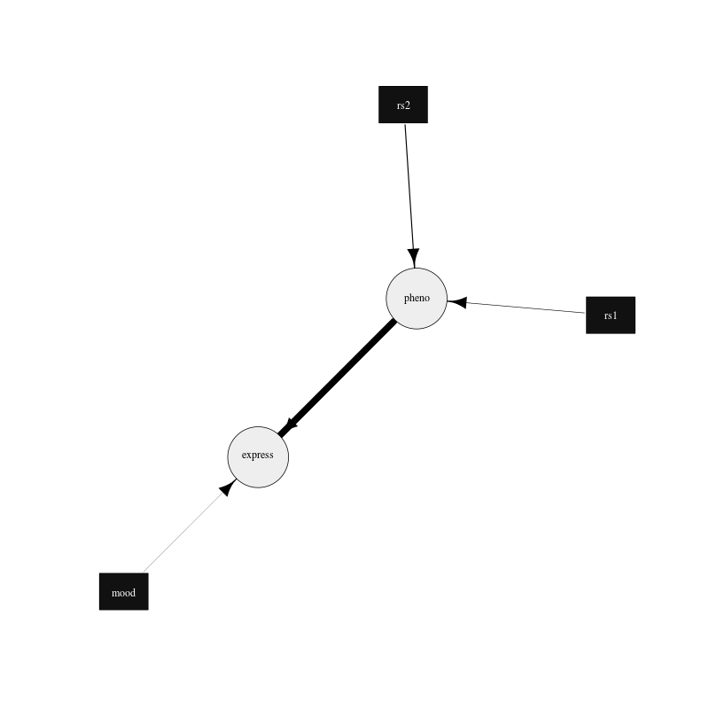

19 Network plotting
A network may be plotted using the igraph R package, see Csardi and Nepusz (2006) for details. The option is part of the network output options, see section 16.
The following is an example parameter file to output the necessary files to plot the network in R with the igraph package. BayesNetty uses the input data and the input network to calculate for each edge a chi squared value, representing twice the difference in log likelihoods between the network where the edge is present and the network where it is absent.
#input continuous data
-input-data
-input-data-file example-cts.dat
-input-data-cts
#input discrete data
-input-data
-input-data-file example-discrete.dat
-input-data-discrete
#input SNP data as discrete data
-input-data
-input-data-file example.bed
-input-data-discrete-snp
#input the example network in format 1
-input-network
-input-network-file example-network-format1.dat
#output files to plot the network
-output-network
-output-network-igraph-file-prefix exampleGraph
This parameter file, paras-plot-network.txt, can be found in example.zip and can be used as follows:
./bayesnetty paras-plot-network.txt
Which should produce output that looks like something as follows:
BayesNetty: Bayesian Network software, v1.00
--------------------------------------------------
Copyright 2015-present Richard Howey, GNU General Public License, v3
Institute of Genetic Medicine, Newcastle University
Random seed: 1551716944
--------------------------------------------------
Task name: Task-1
Loading data
Continuous data file: example-cts.dat
Number of ID columns: 2
Including (all) 2 variables in analysis
Each variable has 1500 data entries
Missing value: not set
--------------------------------------------------
--------------------------------------------------
Task name: Task-2
Loading data
Discrete data file: example-discrete.dat
Number of ID columns: 2
Including the 1 and only variable in analysis
Each variable has 1500 data entries
Missing value: NA
--------------------------------------------------
--------------------------------------------------
Task name: Task-3
Loading data
SNP binary data file: example.bed
SNP data treated as discrete data
Total number of SNPs: 2
Total number of subjects: 1500
Number of ID columns: 2
Including (all) 2 variables in analysis
Each variable has 1500 data entries
--------------------------------------------------
--------------------------------------------------
Task name: Task-4
Loading network
Network file: example-network-format1.dat
Network type: bnlearn
Network score type: BIC
Total number of nodes: 5 (Discrete: 3 | Factor: 0 | Continuous: 2)
Total number of edges: 4
Network Structure: [mood][rs1][rs2][pheno|rs1:rs2][express|pheno:mood]
Total data at each node: 1495
Missing data at each node: 5
--------------------------------------------------
--------------------------------------------------
Task name: Task-5
Outputting network
Network: Task-4
Network Structure: [mood][rs1][rs2][pheno|rs1:rs2][express|pheno:mood]
Network output to igraph files:
exampleGraph-nodes.dat
exampleGraph-edges.dat
R code to plot network using igraph package: exampleGraph-plot.R
--------------------------------------------------
Run time: less than one second
The data is loaded, the network input and output to 2 separate files, one containing the node data and another containing the edge data.
There is also an R file which is output which will look something as follows:
#load igraph library, http://igraph.org/r/
library(igraph)
#load network graph
nodes<-read.table("exampleGraph-nodes.dat", header=TRUE)
edges<-read.table("exampleGraph-edges.dat", header=TRUE)
#create graph
graph<-graph_from_data_frame(edges, directed = TRUE, vertices = nodes)
#plot the network and output png file, edit style as required
#style for continuous nodes
shape<-rep("circle", length(nodes$type))
vcolor<-rep("#eeeeee", length(nodes$type))
vsize<-rep(25, length(nodes$type))
color<-rep("black", length(nodes$type))
#style for discrete nodes
shape[nodes$type=="d"]<-"rectangle"
vcolor[nodes$type=="d"]<-"#111111"
vsize[nodes$type=="d"]<-20
color[nodes$type=="d"]<-"white"
#style for factor nodes
shape[nodes$type=="f"]<-"rectangle"
vcolor[nodes$type=="f"]<-"#eeeeee"
vsize[nodes$type=="f"]<-20
color[nodes$type=="f"]<-"black"
#edge widths for significances
minWidth<-0.3
maxWidth<-10
edgeMax<-max(edges$chisq)
edgeMin<-min(edges$chisq)
widths<-((edges$chisq-edgeMin)/(edgeMax-edgeMin))*(maxWidth - minWidth) + minWidth
styles<-rep(1, length(widths))
#plot to a png file
png(filename="exampleGraph.png", width=800, height=800)
plot(graph, vertex.shape=shape, vertex.size=vsize, vertex.color=vcolor, vertex.label.color=color, edge.width=widths, edge.lty=styles, edge.color="black", edge.arrow.size=1.5)
#finish png file
dev.off()
This R file can be ran as follows in Linux
R --vanilla < exampleGraph-plot.R
and produces the .png image file of the network

Figure 3. Plot of the example network drawn using the igraph R package.
The edges are drawn proportional to the log likelihood difference between networks with and without the edge in question. The minimum and maximum thickness of the plotted edges can be changed by modifying the minWidth and maxWidth variables in the R file. The plot can easily be updated to your needs by following the igraph R package documentation.
If a search is performed to find the best network (see parameter file paras-plot-network2.txt), it can be plotted as above and gives the following network:

Figure 4. Plot of the best fit network drawn using the igraph R package.
{kind=link}